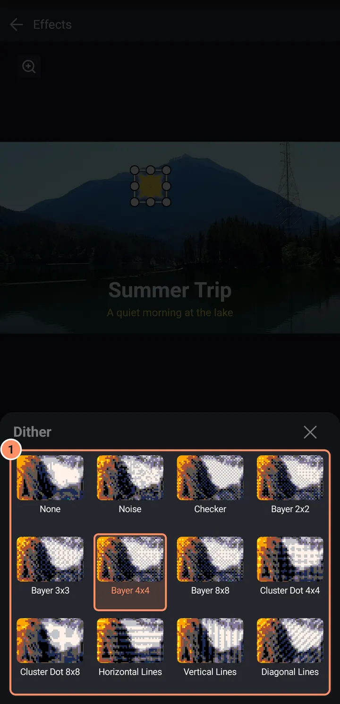
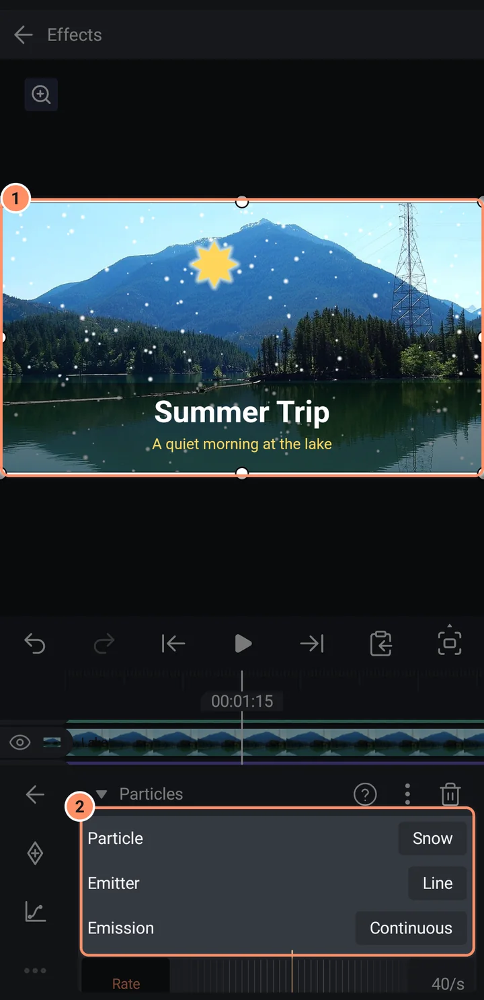

استخدام التأثيرات
أضف التأثيرات، وراكمها، وأعد ترتيبها، وأخفِها، وانسخها، وحرّكها، واعثر على التأثير المناسب في مكتبة التأثيرات.
في هذه الصفحة
يغيّر التأثير مظهر الطبقة أو حركتها: ضبابية، توهج، تغيير لون، اهتزاز. يمكن أن تحتوي الطبقة على أي عدد تريده من التأثيرات. يحتوي AbsentMotion على 204 تأثيرًا في إحدى عشرة فئة. تسرد مكتبة التأثيرات على هذا الموقع كل تأثير مع جميع إعداداته.
إضافة تأثير
- اختر طبقة.
- اضغط على التأثيرات في شبكة الأدوات.
- اضغط على إضافة تأثير في نهاية القائمة. تُفتح مكتبة التأثيرات.
- اضغط على تأثير. يُضاف بإعداداته القياسية وتُفتح إعداداته فورًا.
للقراءة عن تأثير أولاً، اضغط مع الاستمرار على بطاقته. تُفتح صفحة تحتوي على معاينة متحركة ووصف ونجمة لتمييزه كمفضل و+ الإعدادات القياسية، وبالنسبة لبعض التأثيرات، إعدادات مسبقة جاهزة.
مكتبة التأثيرات
- يحتوي الجزء العلوي على مربع بحث ("بحث") يطابق الأسماء أولاً، ثم الأوصاف، ويعثر أيضًا على أدوات AI والإعدادات المسبقة.
- شريط من التأثيرات الموصى بها (Chroma Key، Blur، Glow)، وشبكة من تأثيراتك الأخيرة أو المفضلة (بدّل باستخدام الأيقونتين الصغيرتين)، ثم الفئات.
- الفئات: اللون، التمويه، التشويه، التنميط، الضوضاء، التكرار، المفتاح، الحركة، الإيقاع، ثلاثي الأبعاد، والنص. تظهر فئة جديدة للتأثيرات المضافة في الإصدارات الأحدث. تظهر فئة الصوت للطبقات التي تحتوي على صوت، وتحتوي AI على أدوات AI.
- التأثير الذي لا يمكن تشغيله على هاتفك يظهر باهتًا.

إعدادات التأثير
اضغط على تأثير في القائمة لفتحه. يحتوي رأسه على اسم التأثير وقائمة من ثلاث نقاط وسلة مهملات.

- لكل رقم مسطرة ومربع قيمة. اضغط على اسم إعداد لجعله هدف زر الإطار المفتاحي. الإعدادات التي تمثل مواضع يمكن تحريكها بالسحب على المعاينة.
- يفتح إعداد اللون صفًا من العينات السريعة وحقلاً للون الدقيق.
- يقوم المفتاح بتشغيل خيار أو إيقاف تشغيله. يفتح الاختيار قائمة.
- يعرض إعداد لوحة الألوان (في خريطة الألوان وتنقيط ريترو) كل ألوانه. يضم إعدادات مسبقة لوحات ألوان أجهزة ألعاب وحواسيب قديمة مثل PICO-8 وGame Boy وCommodore 64. يقرأ استيراد ملف لوحة ألوان: صورة فيها حتى 256 لونًا (تُختصر الأكبر إلى 256)، أو ملف Photoshop بصيغة .ase أو .act، أو GIMP .gpl، أو .pal أو .hex أو Paint.NET .txt، مثل لوحات الألوان التي يمكنك تنزيلها من Lospec.
- يفتح نمط التنقيط في تنقيط ريترو (تنقيط) وخريطة الألوان (نمط التنقيط) ورقة فيها صورة مصغرة نموذجية لكل نمط، لتختار حسب شكله. يحيط بالنمط المختار إطار برتقالي. مرّر الشبكة لأعلى لرؤية الباقي.
- تحتوي قائمة النقاط الثلاث على معلومات التأثير، إعادة التعيين إلى الإعدادات الافتراضية، تكرار، نسخ التأثير ولصق قيم التأثير (عندما نسخت تأثيرًا واحدًا من نفس النوع).
- تزيل سلة المهملات التأثير. اضغط على الرأس لإغلاقه.

إذا كانت الطبقة أصلًا لطبقات أخرى، يظهر مفتاح تطبيق على الأبناء في أعلى التأثير (ليس لتأثيرات الحركة أو التكرار).
قائمة التأثيرات
- الترتيب مهم: يتم تطبيق التأثيرات في الأعلى أولاً. اسحب المقبض (إعادة الترتيب) لصف لتغيير الترتيب.
- العين (الرؤية) تخفي تأثيرًا دون حذفه.
- يحتوي المزيد في العمود الأيسر على نسخ التأثيرات (تحدد أيها) ولصق تأثير أو لصق التأثيرات، مما يضيف التأثيرات المنسوخة في نهاية قائمة الطبقة المحددة.

التأثيرات على طبقات متعددة في وقت واحد
حدد عدة طبقات (انظر قوائم الطبقات والاختيار المتعدد) واضغط على التأثيرات في الشريط السفلي. يفتح إضافة تأثير إلى الكل مكتبة التأثيرات ويضع التأثير الذي تختاره على كل طبقة محددة. يضع لصق كل التأثيرات على كل طبقة محددة التأثيرات التي نسختها من طبقة واحدة. يتم تخطي طبقات الصوت والكاميرا والكائنات الفارغة.
تحريك تأثير
يمكن أن يكون لكل رقم ولون وموضع في التأثير إطارات مفتاحية. افتح التأثير، واضغط على اسم الإعداد، وضع رأس التشغيل حيث تريد، واضغط على زر الإطار المفتاحي. يشكّل زر التخفيف الحركة بين الإطارات المفتاحية. انظر الإطارات المفتاحية والتخفيف.
الإعدادات المسبقة داخل التأثيرات
تأتي أربعة تأثيرات نصية وتأثير جسيمات مع إعدادات مسبقة جاهزة: Text Progress (Typewriter، Fade In by Word، Slide Up by Letter، Pop In)، Text Transform (Wave، Spin Cascade)، Text Randomizer (Scramble)، Count Up/Down (Count Up) وجسيمات (ثلج، شرر، كونفيتي، فقاعات، غبار، قلوب، وميض، بتلات، نافورة الطبقات، كونفيتي الإيقاع). اضغط مع الاستمرار على التأثير في المكتبة واختر الإعداد المسبق تحت PRESET.
تختلف هذه عن أداة الإعدادات المسبقة للطبقة، التي تحتفظ بمظهرك الخاص: انظر الأصول والقوالب والإعدادات المسبقة.
أنواع خاصة من التأثيرات
- تأثيرات الحركة (Auto-Shake، Oscillate، Swing، Spin، Random Displacement، Random Jitter، Pulse، Echo، Offset، Move Along Path، True Motion Blur) تحرك الطبقة تلقائيًا.
- تأثيرات التكرار تصنع نسخًا في خط أو دائرة أو شبكة أو على طول مسار أو مبعثرة.
- تأثيرات ثلاثي الأبعاد تحول الطبقة إلى مكعب أو كرة أو حلقة وغيرها من المجسمات. ثم تتحكم علامة التبويب Rotate في دوران التأثير.
- تأثيرات الإيقاع (Beat Blur، Beat Flash، Beat Glitch، Beat Glow، Beat Pulse، Beat RGB Split، Beat Rotate، Beat Shake و Beat Zoom) تتفاعل مع كل نبضة من الموسيقى. حدد مقطع الموسيقى واضغط على تحديد الإيقاعات في قائمة طبقته أولًا؛ وبدون علامات النبضات تتبع إعداد BPM. انظر الصوت.
- تأثيرات المفتاح (Chroma Key، Luma Key) تزيل لونًا أو الأجزاء الداكنة والمشرقة من الطبقة، على سبيل المثال الشاشة الخضراء.
- تأثيرات النص (Text Progress، Text Transform، Text Randomizer، Count Up/Down، Timecode) تحرك النص حرفًا بحرف. انظر النص والخطوط.
- تأثيرات الصوت تعمل على الصوت: انظر الصوت.
- أدوات AI (Remove Background، Reduce Noise) تعمل على الهاتف: انظر أدوات AI.
اقتصاص، وهو تأثير من فئة المفتاح، يقص حواف الطبقة. وللطبقات أيضًا زر اقتصاص، في الصفحة 2 من شبكة الأدوات، يعرض الاقتصاص على اللوحة: راجع أدوات الطبقة.
جسيمات
جسيمات (في التنميط) ترسل جسيمات تتطاير من الطبقة. يحدد جسيم نوعها: ثلج أو شرر أو قصاصات أو فقاعات أو غبار أو قلوب أو نجوم أو بتلات أو نسخ صغيرة من طبقة نفسها. يحدد باعث مكان بدايتها: نقطة أو خط أو منطقة أو محيط الطبقة. يحدد انبعاث توقيتها: مستمر (معدل في الثانية) أو انفجار (عدد في اللحظة التي تختارها) أو عند النبضات (انفجار عند كل نبضة من الموسيقى، ويحتاج إلى الإشارات المرجعية للنبضات الموضحة أعلاه). وفي الأسفل العمر وسرعة واتجاه الجسيمات، والقوى جاذبية ورياح ودوامة، وحجم ولون الجسيمات. يفتح إعدادات إضافية عناصر التحكم الدقيقة. فيه عشرة إعدادات مسبقة للبدء منها (انظر الإعدادات المسبقة داخل التأثيرات أعلاه).

نصائح
- إذا أصبحت المعاينة بطيئة مع العديد من التأثيرات، فبدّل جودة المعاينة إلى نصف أو ربع. لا يتأثر التصدير.